Red Bananas × SND 96
Saudi National Day 96 film · عزّنا بطبعنا
كل إنجاز نحققه…بداية لإنجاز أكبر
Every achievement we make is the start of a bigger one.
A National Day film that connects Saudi heritage and character to today's achievements, and to the agency's own role in telling these stories.
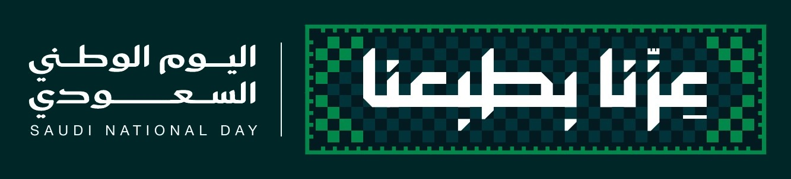
Four simple stages
From the land that shaped the Saudi character, through the values it carries, to the Kingdom's achievements, and finally to the agency's part in telling that ambition.
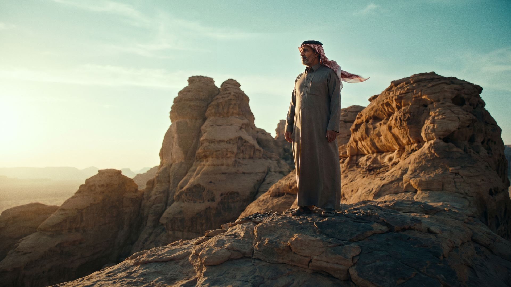
Landscapes, old villages and craft: where the character was formed.
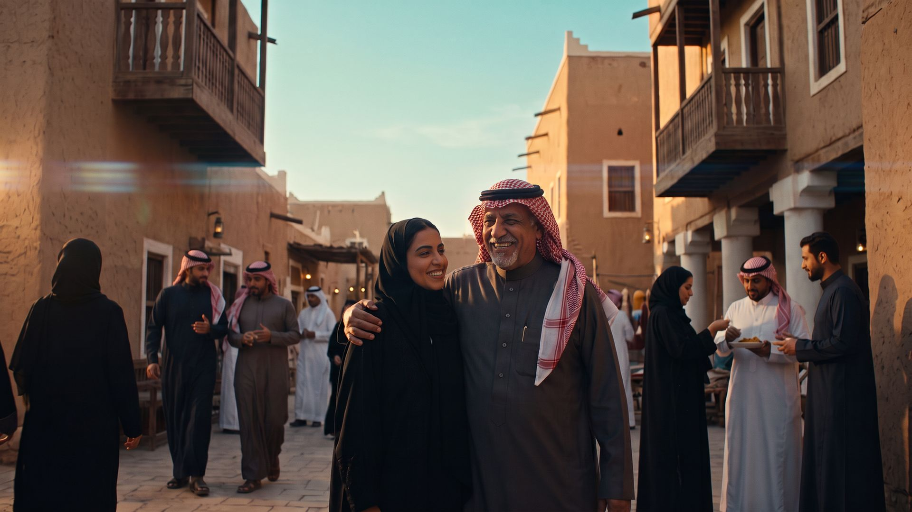
Hospitality, standing together and pride in origin: shown, not stated.
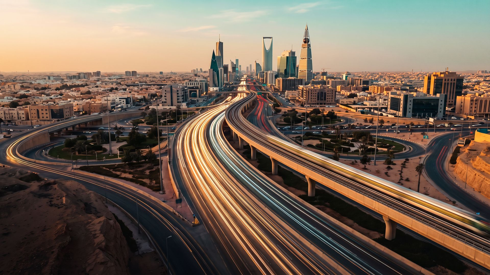
Roads, cities, innovation and development: the same character, at scale.
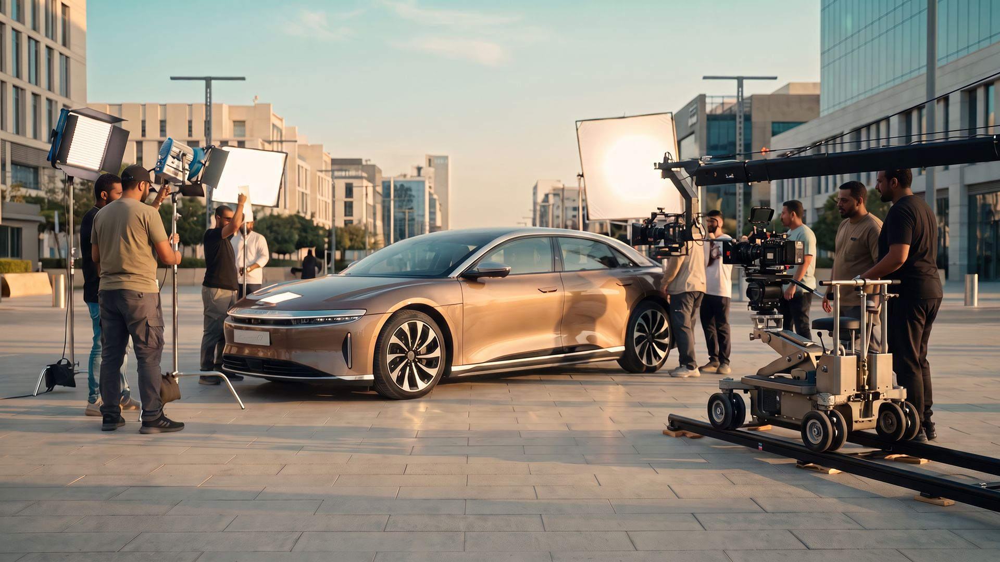
Telling Saudi ambition creatively: idea to identity, identity to story.
Four verses, one voice
The voice-over is written in a warm Saudi register and moves with the four stages of the story.
من هنا بدأت الحكاية.من أرض علّمتنا الثبات، وبحر وسّع أفقنا،وبيوت حفظت هويتنا جيلًا بعد جيل.ومنها أخذنا طبعنا.
This is where the story began. From a land that taught us to stand firm, a sea that widened our horizon, and homes that kept our identity, generation after generation. And from them, we took our nature.
طبعٌ خلّانا ما نكتفي بالحلم.حوّلنا الطريق إلى مدن تنبض،والمعرفة إلى ابتكار،والثقافة إلى حضور يصل للعالم.
A nature that never let us settle for the dream. We turned roads into cities with a pulse, knowledge into innovation, and culture into a presence the world can feel.
وإحنا، من هذا الوطن، نحمل الطبع نفسه.نحوّل الفكرة إلى هوية،والهوية إلى قصة،والقصة إلى أثر.
And we, from this nation, carry the same nature. We turn an idea into an identity, an identity into a story, and a story into impact.
لأن كل إنجاز نحققه…بداية لإنجاز أكبر.عزّنا بطبعنا.وكل عام والسعودية بعز.
Because every achievement we make is the start of a bigger one. Our pride is in our nature. And may Saudi Arabia always stay proud.
The key frames, in flow
The storyboard as it plays: sixteen frames, each carrying its own line of the script.
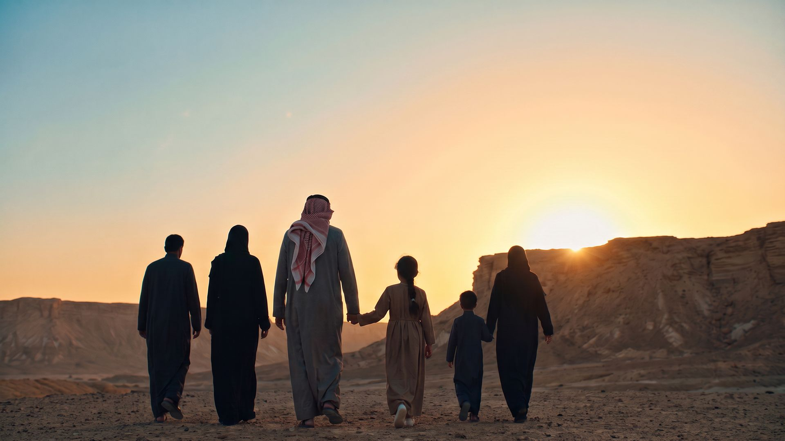
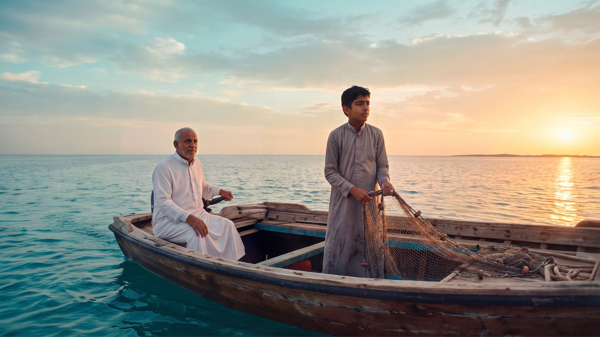
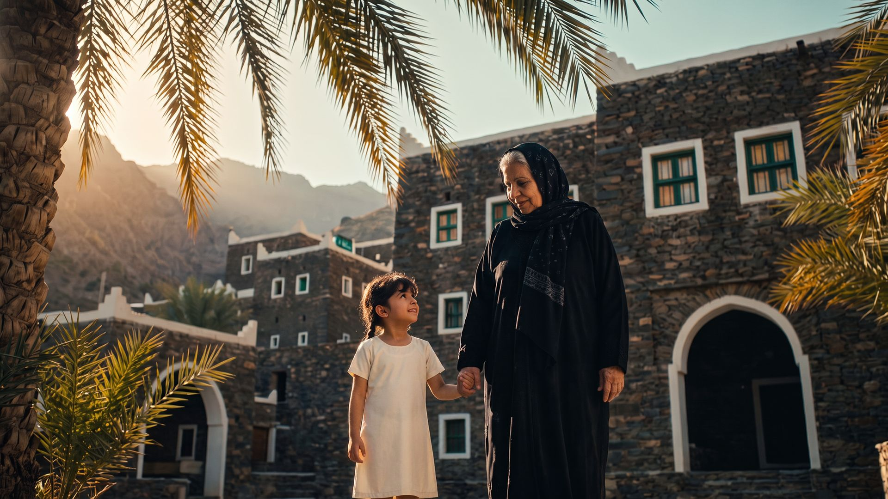
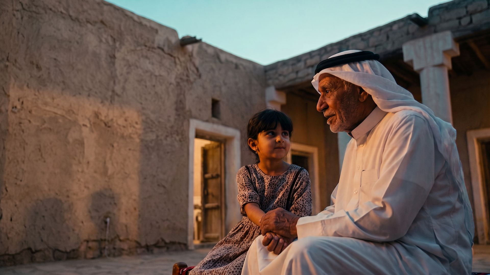
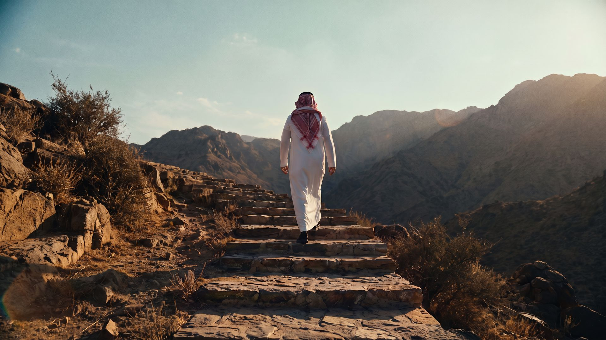
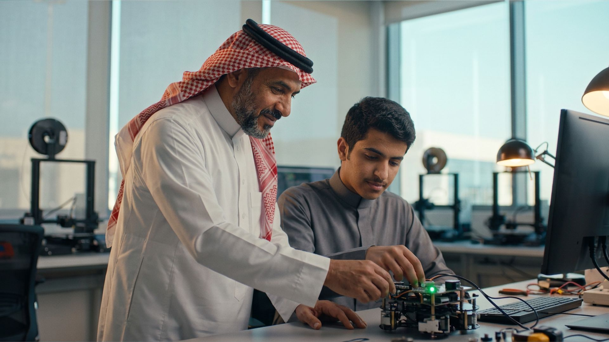
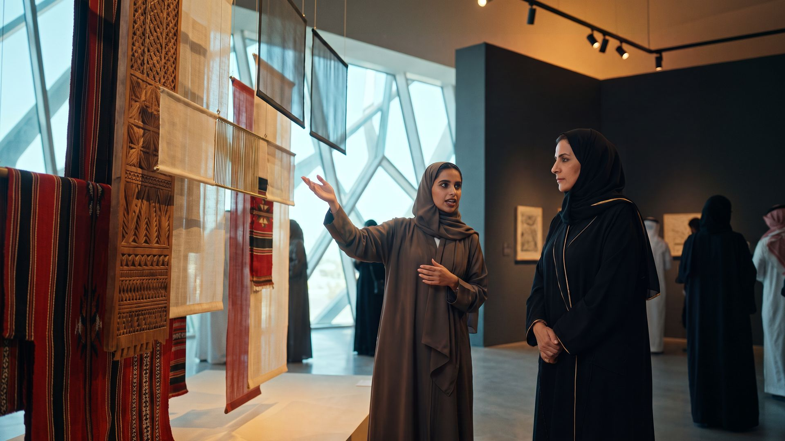
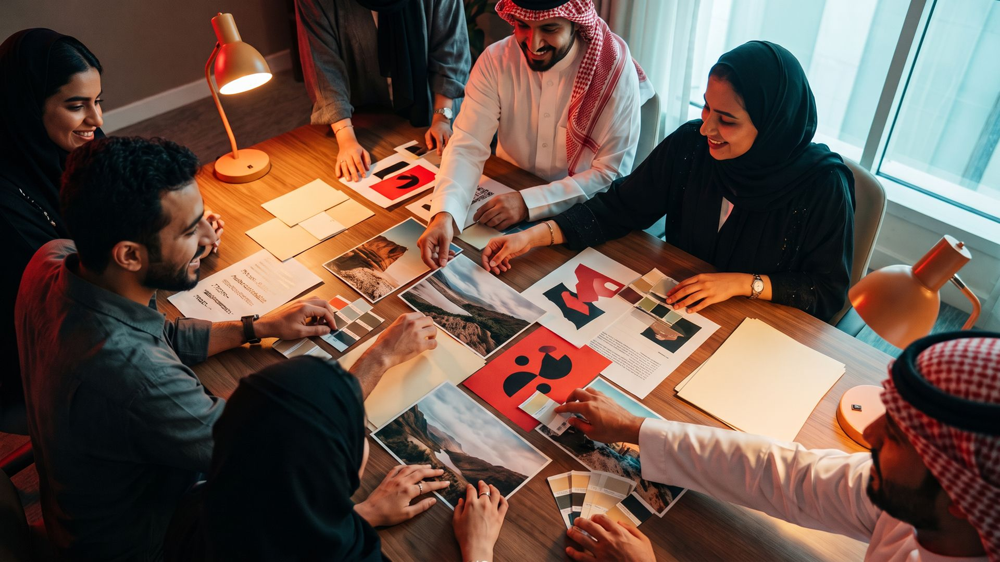
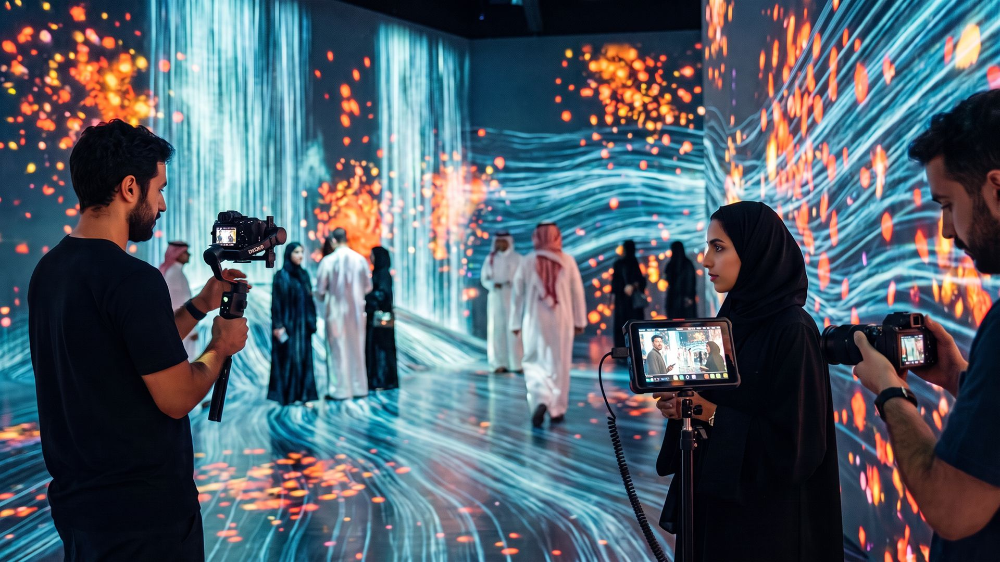
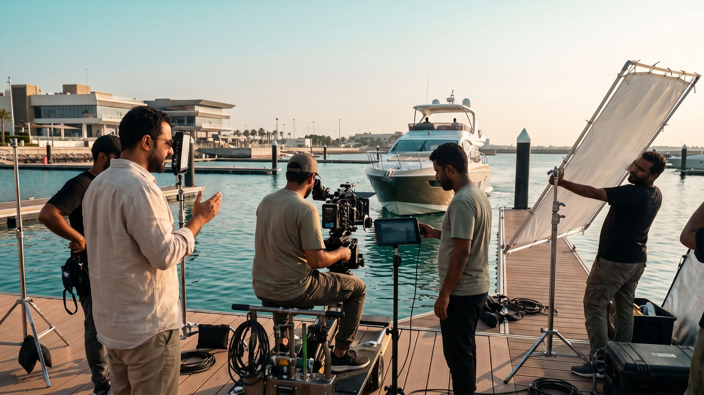
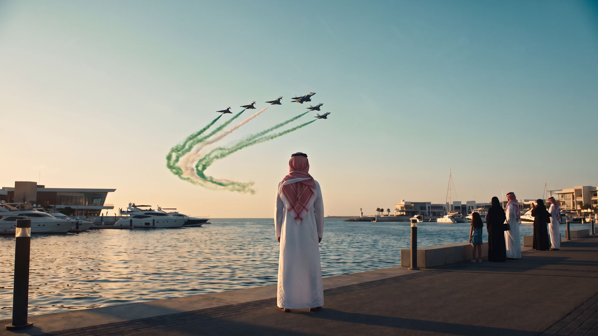
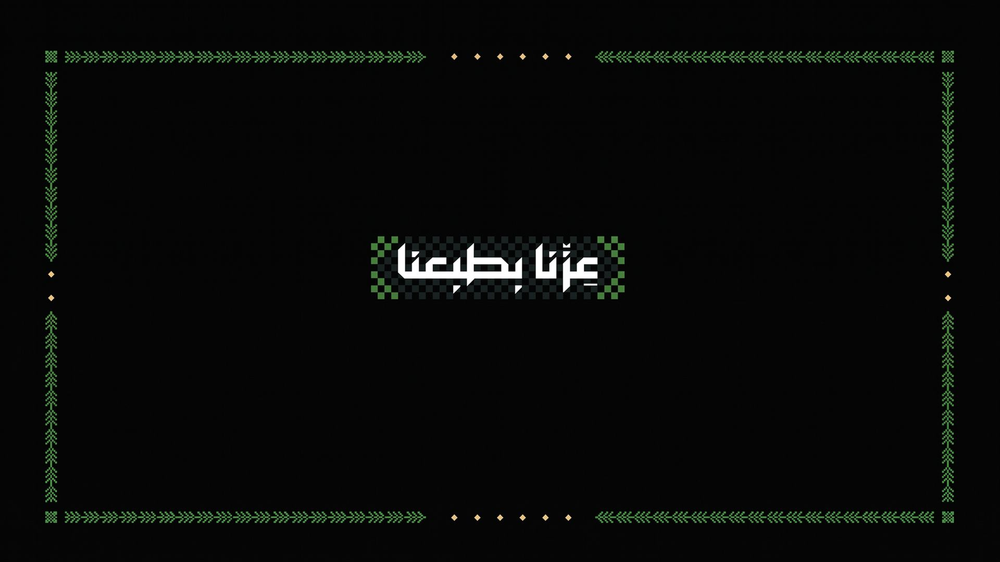
How the footage is made
Three sources, edited as one language.
Key frames are generated as AI stills, then animated with slow camera pushes, parallax and light motion so every image breathes on screen.
Live footage shot at our office: workspaces, screens, hands, faces, grounding the film in a real place and real people.
BTS from our own work: the team building, filming and editing. Raw, handheld texture cut against the polished frames.
Generated frames set the scale and the emotion; the office and BTS material carry the truth.
The score carries the story
One motif, three states. The edit is cut to the music, so image and score reach the peak at the same second.
A solo oud opens the film: warm, intimate, unmistakably ours. Sparse percussion and room air keep the first frames quiet and rooted.
On the turn to achievements, strings and a driving pulse pick up the oud motif. Tempo and layers build with every milestone on screen.
One sustained line; the oud returns, softer, and leaves the final message to land.
Each value, its own visual world
The National Day theme breaks into five values, and every part of the film is built to carry one of them.
عزّنا بطبعنا
وكل عام والسعودية بعز.The start of
something bigger.
From the land that formed the character to the crews telling its story today: one film, one nature, and a promise that every achievement opens the next.